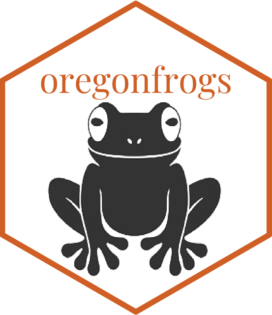

library(tidyverse)
library(mlr3)
# remotes::install_github("mlr-org/mlr3spatiotempcv")
library(mlr3spatiotempcv)
library(mlr3learners) # needed to initiate a new learner (such as classif.ranger)
# remotes::install_github("mlr-org/mlr3extralearners")
library(mlr3extralearners)
library(ranger)
# install.packages("apcluster")
# remotes::install_github("mlr-org/mlr3proba")
library("mlr3viz")Oregon Spotted Frog R Package with mlr3 Machine Learning
Machine Learning
mlr3
R package tutorial using Oregon spotted frog data with mlr3 classification, regression, spatial features, and machine learning practice.
Updated June 2023
Overview
This page introduces the {oregonfrogs} R package and shows how Oregon spotted frog survey data can be used for machine learning practice in R. The workflow focuses on classification, regression, coordinate handling, and model experimentation with the {mlr3} ecosystem.
I made a package! Looking for data to use for one of my data visualization I stomped into this data about frogs in Oregon (US) and realized that it was very interesting for making both classification and regression models. So, I wrapped the data into a package, and even if it is still a work in progress I started using it for practicing machine learning algorithms.
More info about it will follow. For now this project is all about how to use {mlr3} package for analysing and predicting data. mlr3 is a machine learning ecosystem, it provides a unified interface to use different machine learning models in R.

Let’s load the libraries, and start using mlr3 with oregonfrogs data!
To install {oregonfrogs}, which is still in its development version you need to install it from github:
# remotes::install_github("fgazzelloni/oregonfrogs")
library(oregonfrogs)I changed the name of the dataset to oregonfrogs, so now is oregonfrogs::oregonfrogs also added some functions, made some modifications, and left the raw data (oregonfrogs_raw) available.
Here, I take some selected variables which I’ll use in the model.
oregonfrogs_raw %>%
head(3) %>%
select(3:4, 6:8, 10:11)It’s a practical use to change the utm coordinates into longlat. The package include these changes in the oregonfrogs dataset. As well as, I added a couple of functions that let the user switch back and forth between coordinate systems, utm_to_longlat and longlat_to_utm.
This is basically what the utm_to_longlat() function does:
oregonfrogs <- oregonfrogs_raw %>%
dplyr::select(UTME_83, UTMN_83) %>%
sf::st_as_sf(coords = c(1, 2),
crs = "+proj=utm +zone=10") %>%
sf::st_transform(crs = "+proj=longlat +datum=WGS84") %>%
sf::st_coordinates() %>%
cbind(oregonfrogs_raw) %>%
mutate(
SurveyDate = as.Date(SurveyDate, "%m/%d/%Y"),
month = lubridate::month(SurveyDate),
Water = as.factor(Water)
) %>%
select(-SurveyDate,-UTME_83,-UTMN_83,-Site)And here is a spec of the two systems in comparison for the oregonfrogs data:
Set a Task
The mlr3 package provides a task() function, which allows to set the data to use inside the selected model.
More specifically, here is used mlr3spatiotempcv::TaskClassifST() specific for spatial classification modeling tasks.
Among the function’s options, there are:
- id: the identification of the location,
- backend: the data to use in the model
- target: the response variable
- …
task = mlr3spatiotempcv::TaskClassifST$new(
id = "lake",
backend = mlr3::as_data_backend(oregonfrogs),
target = "Water",
#positive = "FALSE", ### ????
coordinate_names = c("X", "Y"),
coords_as_features = TRUE,
crs = "+proj=longlat +datum=WGS84" # "+proj=utm +zone=10"
)Set the Learner
The second step is to set the learner: mlr3::lrn()
This is the model type and prediction outcome type:
# model type
# mlr_learners$get("classif.ranger")
learner = mlr3::lrn("classif.ranger", predict_type = "prob")
# learner$help()
learnerlearner$param_setlearner$train(task)learner$modelPredict
prediction <- learner$predict_newdata(oregonfrogs)
measure = msr("classif.acc")
prediction$score(measure)prediction$confusionmlr3viz::autoplot(prediction)Resampling
# resampling
resampling = mlr3::rsmp("repeated_spcv_coords",
folds = 5,
repeats = 100)
resamplingA logging record can be set for debugging in case model crashes.
lgr::get_logger("mlr3")$set_threshold("warn")Parallelization:
parallelly::availableCores()
set_threads(learner)# fit resamples
time = Sys.time()
rr_spcv_ranger = mlr3::resample(task = task,
learner = learner,
resampling = resampling)
Sys.time() - timeTime difference of 48.01483 secs
rr_spcv_ranger
rr_spcv_ranger$score() Model evaluation
# accuracy
score_spcv_ranger = rr_spcv_ranger$score(measure = mlr3::msr("classif.acc")) %>%
select(task_id, learner_id, resampling_id, classif.acc)# avg accuracy
mean(score_spcv_ranger$classif.acc) %>%
round(2) # 0.64Machine Learning
Tuning: Tweaking the hyperparameters of the learner
In random forests, the hyperparameters mtry, min.node.size and sample.fraction determine the degree of randomness, and should be tuned. This is when machine learning comes into play.
Hyperparameters:
- mtry indicates how many predictor variables should be used in each tree
- sample.fraction parameter specifies the fraction of observations to be used in each tree
- min.node.size parameter indicates the number of observations a terminal node should at least have
source: https://geocompr.robinlovelace.net/eco.html
#### tuning
tune_level = mlr3::rsmp("spcv_coords", folds = 5)
terminator = mlr3tuning::trm("evals", n_evals = 50)
tuner = mlr3tuning::tnr("random_search")Search space
To specify tuning limits paradox::ps() is used:
search_space =
paradox::ps(
mtry = paradox::p_int(lower = 1,
upper = ncol(task$data()) - 1),
sample.fraction = paradox::p_dbl(lower = 0.2,
upper = 0.9),
min.node.size = paradox::p_int(lower = 1,
upper = 10)
)
search_spaceAutomation
Automated tuning specification via the mlr3tuning::AutoTuner() function:
autotuner_rf =
mlr3tuning::AutoTuner$new(
learner = learner,
store_benchmark_result = TRUE,
resampling = mlr3::rsmp("spcv_coords",
folds = 5),
# spatial partitioning
measure = mlr3::msr("classif.acc"),
# performance measure
terminator = mlr3tuning::trm("evals",
n_evals = 50),
# specify 50 iterations
search_space = search_space,
# predefined hyperparameter search space
tuner = mlr3tuning::tnr("random_search") # specify random search
)# hyperparameter tuning
time = Sys.time()
set.seed(0412022)
autotuner_rf$train(task)
Sys.time() - timeautotuner_rf$tuning_resultautotuner_rf$predict(task)
# pred = terra::predict(..., model = autotuner_rf, fun = predict)
# save.image("data/oregonfrogs_mlr3.RData")res <- autotuner_rf$predict(task)
autoplot(res)res %>%
fortify() %>%
pivot_longer(cols = starts_with("prob"),
names_to = "prob_type",
values_to = "prob") %>%
mutate(prob_type = gsub("prob.", "", prob_type)) %>%
ggplot(aes(prob, group = prob_type, fill = prob_type)) +
geom_density(alpha = 0.5) +
facet_wrap(vars(prob_type), scales = "free") +
labs(fill = "Water Type", x = "Probability", y = "Density") +
scale_fill_viridis_d() +
theme_bw()